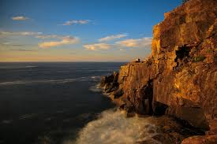

ITINERARY: ACADIA NATIONAL PARK
Bubble Pond, Acadia National Park
Day 1
Park Loop Road
The best way to start the visit to Acadia National Park especially for new visitors is with Park Loop Road. The loop runs 27 miles passing through forests, dipping through valleys, skirting the shoreline and rambling past beautiful lakes and ponds. Take time to stop by the popular sights - Sand Beach (Sand Beach is the the beginning of Ocean Trail. You can hike along the trail by the rough and rocky coast until you arrive at Thunder Hole), Thunder Hole, Otter Cliff, Bubble Pond and Jordan Pond. The road climbs to the top of Cadillac Mountain. The sweeping views of the surrounding coastline from the summit is simply breathtaking. Be sure to end the day with popovers at Jordan Pond House.
Sand Beach

Thunder Hole
Otter Cliff
Day 2
Take A Hike
Acadia National Park has over 100 miles of hiking trails and many of these trails offer stunning views of the surrounding coast including offshore islands, lighthouses and sailboats during the summer. For a leisurely hike with great views, Gorham Mountain is great. For avid hikers, the Precipice Trail offers the park's most challenging hike. Spend the rest of the day in Bar Harbor.
Day 3
Take A Bike
Biking on the very scenic Carriage Road is one of the highlights of this trip. The road was built by John D. Rockefeller Jr. who was a summer resident on the island. He was a skilled horseman who wanted to travel around his property riding on his carriage or horses on byways that were free of motors. So he had one constructed. He spared no expense hiring famous landscape architects and constructing over a dozen beautiful stone bridges. Ultimately, he donated his property to Acadia National Park and as a result it is open to all now. You can easily spend most of the day biking on the Carriage Road peddling under stone bridges and past lakes, waterfalls, and ocean views. Spend the rest of the day in Bar Harbor.
For more imformation on Carriage Road, go to Map for Carriage Road.
Day 4
Water World
The waters around Mount Desert Island offer some of the best sea kayaking in Maine making the state one of the country's top kayaking destinations. Start the day with a kayaking tour around some of the beautiful offshore islands. If kayaking is not what you are in for, embark on a harbor cruise. Whether cruising or kayaking, keep your eyes out for sightings of bald eagles, puffins, harbor seals and minke whales. Spend the rest of the day in Bar Harbor.
Day 5
Spend A While On The Quiet Side
In addition to Acadia National Park, Mount Desert Island has four towns to boast - Bar Harbor (villages of Eden, Hulls Cove, Salisbury Cove and Town Hill), Mount Desert (villages of Hall's Quarry, Northeast Harbor, Otter Creek, Pretty Marsh, Seal Harbor, and Somesville), Tremont (villages of Bass Harbor, Bernard, Gotts Island, Seal Cove, and West Tremont) and Southwest Harbor (villages of Manset and Seawall).
The west side of Mount Desert Island is considered the "quiet side" compared to the bustling Bar Harbor on the east. This side has more quaint fishing villages and scenic little harbors (and celebrities - Martha Stewart's estate is located in Seal Harbor, a village in the town of Mount Desert). These towns were first settled by fishermen and still retain their maritime heritage with fishing fleets and boat yards.
A great way to start the day on the west side of the island is by hiking up Acadia Mountain which offers stunning views of Somes Sound. Explore some of the villages on the west side. They offer great views of lobster boats and other yachts, lobster traps and buoys and winding roads. The famous Bass Harbor Head Lighthouse originally constructed in 1858 is here on the west side of Acadia National Park. Have dinner at Thurston's Lobster Pound. It is a rustic, waterfront restaurant that serves up the freshest lobsters. You cannot go wrong with any item on the menu here. If you can time dinner right, you will be able to get to Bass Harbor Head Lighthouse just in time for views of the surrounding islands and ocean at sunset. It is only a few short trails to the tower. The views are spectacular especially at sunset.
There really is no better way to cap off this summer travel.